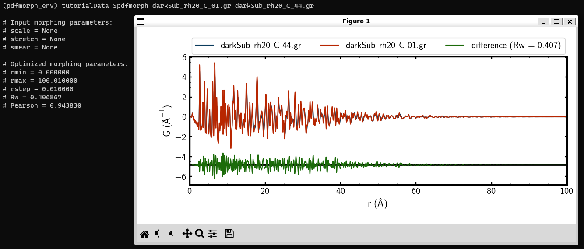
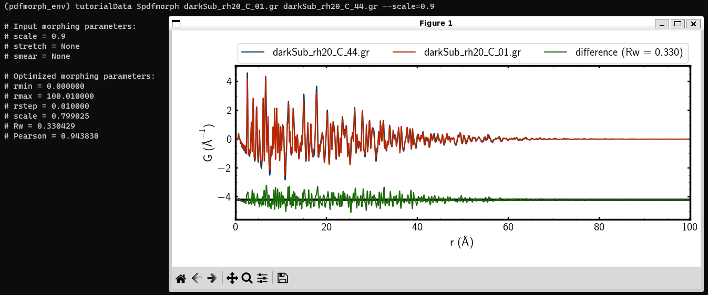
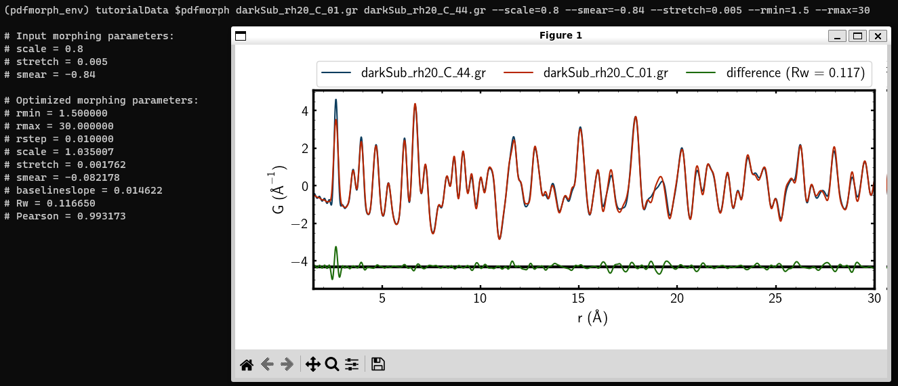

Welcome! This will be a quick tutorial to accquaint users with diffpy.morph
and some of what it can do on the command-line.
Tutorials for more advanced features can be found on the advanced tutorials page.
For those wishing to integrate diffpy.morph into their Python scripts,
see the morphpy tutorial.
To see more details and definitions about
the morphs please see the publication describing diffpy.morph.
To be published:
As we described in the README and installation instructions, please make
sure that you are familiar with working with your command line terminal
before using this application.
Before you’ve started this tutorial, please ensure that you’ve installed
all necessary software and dependencies.
In this tutorial, we will demonstrate how to use diffpy.morph to compare
two
PDFs measured from the same material at different temperatures.
The morphs showcased include “stretch”, “scale”, and “smear”.
If it’s not active already, activate your diffpy.morph-equipped
conda environment by typing in
condaactivate<diffpy_morph_env>
If you need to list your available conda environments,
run the command condainfo--envs or
condaenvlist
Run the diffpy.morph--help command and read over the
info on that page for a brief overview of some of what we will
explore in this tutorial.
Using the mkdir command, create a directory where you’ll
store the tutorial PDF files and use the cd command to change
into that directory. You can download the tutorial files
here.
Then, cd into the quickstartData directory.
The files in this dataset were collected by Soham Banerjee
at Brookhaven National Laboratory in Upton, New York.
The files are PDF data collected on Iridium Telluride with
20% Rhodium Doping (IrRhTe2) with the first file (01) collected
at 10K and the last (44) at 300K. The samples increase in
temperature as their numbers increase. The “C” in their names
indicates that they have undergone cooling.
Note that these files have the .gr extension, which
indicates that they are measured PDFs. The .cgr file
extension indicates that a file is a calculated PDF, such as
those generated by the
PDFgui
program.
First, we will run the diffpy.morph application without any morphing
and only using one PDF. Type the following command into your
command line
Without morphing, the difference Rw = 0.407. This indicates that
the two PDFs vary drastically.
While running the diffpy.morph command, it is important
to remember that the first PDF file argument you provide
(in this case, darkSub_rh20_C_01.gr) is the PDF which
will get morphed, while the second PDF file argument you
provide (here, darkSub_rh20_C_44.gr) is the PDF which
acts as the model and does not get morphed. Hereinafter,
we will refer to the first PDF argument as the “morph”
and the second as the “target”, as the diffpy.morph display
does.

Using diffpy.morph to compare two different PDFs without morphing.
Now, we will start the morphing process, which requires us to
provide initial guesses for our scaling factor, Gaussian smear,
and stretch, separately. We will start with the scaling factor.
Begin by typing the command
Now, the difference Rw = 1.457, a significant increase from our
value previously. We must modify our initial value for the
scaling factor and do so until we see a reduction in the
difference Rw from the unmorphed value. Type
The difference Rw is now 0.351, lower than our unmorphed
example’s value. To see diffpy.morph optimize the scale factor,
simply drop -a from the command and type
diffpy.morph, given a reasonable initial guess, will use find the
optimal value for each morphing feature. Here, we see that
diffpy.morph displays scale=0.799025 in the command prompt,
meaning that it has found this to be the most optimal value for
the scale factor. The difference Rw = 0.330, indicating a
better fit than our reasonable initial guess.
It is the choice of the user whether or not to run values
before removing -a when analyzing data with diffpy.morph.
By including it, you allow the possibility to move towards
convergence before allowing the program to optimize by
removing it; when including it, you may reach a highly
optimized value on the first guess or diverge greatly.
In this tutorial, we will use it every time to check
for convergence.

diffpy.morph found an optimal value for the scale factor.
Now, we will examine the Gaussian smearing factor. We provide an
initial guess by typing
And viewing the results. We’ve tailored our scale factor to be
close to the value given by diffpy.morph, but see that the difference
Rw has increased substantially due to our smear value. One
approach, as described above, is to remove the -a from the
above command and run it again.
Note: The warnings that the Terminal/Command Prompt
displays are largely numerical in nature and do not
indicate a physically irrelevant guess. These are somewhat
superficial and in most cases can be ignored.
We see that this has had hardly any effect on our PDF. To see
an effect, we restrict the rmin and rmax values to
reflect relevant data range by typing
Now, we see that the difference Rw = 0.204 and that the optimized
smear=-0.084138.
We restricted the r values because some of the Gaussian
smear effects are only visible in a fixed r range. We
chose this r range by noting where most of our relevant
data was that was not exponentially decayed by
instrumental shortcomings.
We are getting closer to an acceptably close fit to our data!
Finally, we will examine the stretch factor. Provide an initial
guess by typing
And noting that the difference has increased. Before continuing,
see if you can see which direction (higher or lower) our initial
estimate for the stretch factor needs to go and then removing
the -a to check optimized value!
to observe decreased difference and then remove -a to see
the optimized --stretch=0.001762. We have now reached
the optimal fit for our PDF!

The optimal fit after applying the scale, smear, and stretch morphs.
Now, try it on your own! If you have personally collected or
otherwise readily available PDF data, try this process to see if
you can morph your PDFs to one another. Many of the parameters
provided in this tutorial are unique to it, so be cautious about
your choices and made sure that they remain physically relevant.